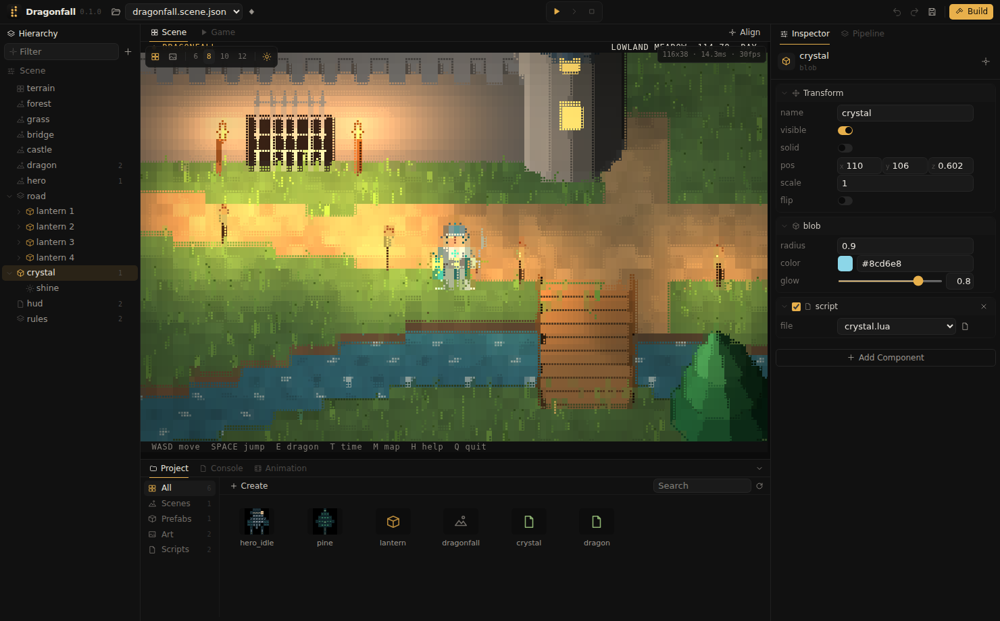

Assets and import
The Project window shows the project folder on disk. It creates, imports, organizes and deletes assets; references to assets remain valid when assets are renamed or moved.

Folder layout
The engine does not require a folder layout. Assets can be grouped by type, by level, by character, or kept next to the prefab that uses them. Scenes, scripts, materials, animator controllers, prefabs and imported files are placed in the folder open in the Project window.
Project window
| Action | Input |
|---|---|
| Open a folder | Click it in the tree, or double click its tile. The path above the tiles leads back up. |
| Create | Create, or the context menu of empty space: Folder, Script, Scene, Material, Animator Controller. |
| Move | Drag tiles or folders onto a folder in the tree, a folder tile or the path. The .meta files move along. |
| Rename, delete | The context menu of a tile or folder. Deleting asks for confirmation and removes the files from disk; references to them show Missing. |
| Search, filter | The search field and the type filter search all folders; Show in Folder in a result's context menu opens its folder. |
| Open an asset | Double click: a scene opens, a prefab opens in prefab mode, a script opens in the code editor, a sound plays, an animator controller opens the Animator window. |
| Inspect an asset | A click shows textures, materials and models in the Inspector with their settings. |
| Texture actions | Create Material makes a material using the texture; Convert to Sprite writes a sprite next to it, see Textures and materials. |
| Packages | Installed packages are listed under Packages and are read only. Export Package in a folder's context menu shares the folder, see Packages. |
| Rescan | The reload button reads every file again. |
Importing files
Files and folders dragged from the file manager into the editor are copied into the project:
| Dropped on | Result |
|---|---|
| Project window | Copied into the open folder, or into the folder tile under the pointer. |
| Scene view | Copied into the open folder; models, prefabs and sprites are placed where they were dropped. |
| Hierarchy | Copied into the open folder and created under the row they were dropped on. |
A name that is already taken receives a number, as in house 2.obj. Files that are already inside the project are not copied.
Asset types
| Files | Asset | See |
|---|---|---|
.scene.json | Scene | Scenes and prefabs |
.prefab.json | Prefab | Scenes and prefabs |
.obj with .mtl | Model, with its materials and textures | Models |
.png, .jpg, .gif | Texture | Textures and materials |
.material.json | Material | Textures and materials |
.sprite.json, .xp | Sprite: glyph art as palette JSON or a REXPaint file | Textures and materials |
.wav, .mp3 | Sound | Audio |
.animator.json | Animator controller | Animation |
.lua | Script | Lua scripting |
Other files, such as notes or a plain .json with game data, are not assets. They are copied when a folder is imported and otherwise left unchanged; builds do not include them.
.json files. Opening or running such a project renames them to .sprite.json together with their .meta files; references remain valid..meta files
Every asset has a .meta file with a permanent UUIDv7; scenes and prefabs refer to assets by this id. Textures and models also store their import settings in it:
{
"format": 1,
"guid": "019a0f3e-7c41-7b2a-9d55-3f1c8e2a9b40",
"import": { "maxSize": 128, "filter": "nearest", "alphaCutoff": 0.5 }
}.meta files belong under version control together with their assets, so every copy of the project uses the same ids.
Sharing between projects
Sets of assets that are reused across projects are best shared as a package, which is installed and removed as a whole. For a single copy, a folder can be copied together with its .meta files and dropped onto the other project's Project window. The imported assets keep their ids, so a prefab still finds its scripts and textures. An asset whose id already exists in the target project receives a new id.